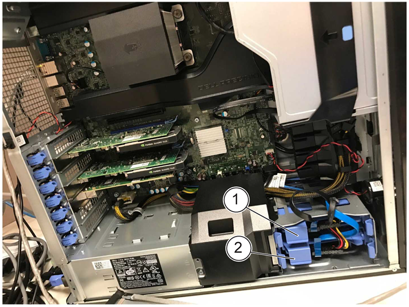
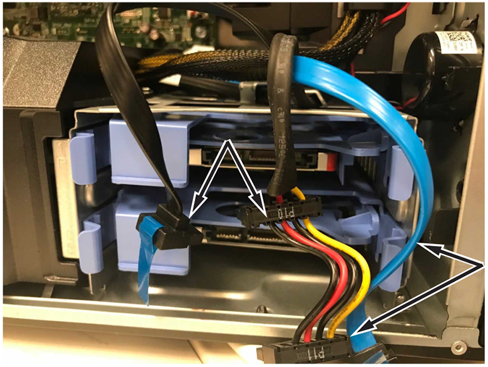
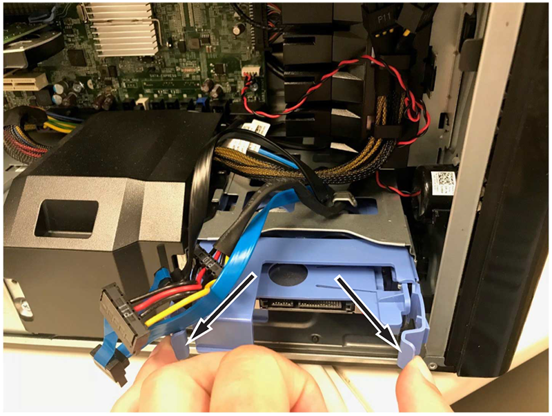
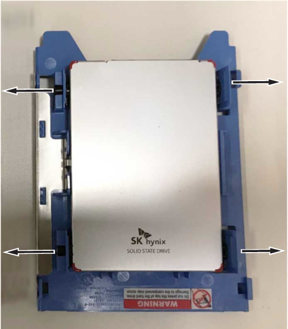

Removal and installation instructions for replacing the solid state drive (SSD) on the host computer.
Prerequisites
Personnel requirements
Required persons
Preliminary requirements
Procedure
Finalization
1
-
20 minutes
-
Tools and test equipment
Item
Quantity
Part number
Manufacturer
Wrist Grounding Strap
1
46-198094P1
-
Replacement parts
Item
Quantity
Part Number
Manufacturer
Dell 1 TB SSD SATA Class 20 2.5 Inch Drive*
1
5821364
-
Transcend 1 TB SATA SSD*
1
8780011-105
-
HDD 1 TB Expansion
1
G8100PB
-
*SSD part number 5821364 is reaching end of life status and after stock runs out, 8780011-105 will need to be ordered.
Safety
Before working in any GE HealthCare MR suite or doing any GE HealthCare service procedure, you must:
Have read and understood all hazard conditions and safety requirements in the latest revision of the GE HealthCare MR Service Safety Manual (5452735).
Have successfully completed all relevant GE HealthCare Environmental Health and Safety (EHS) courses (or for non-GE employees, equivalent workplace training courses).
Comply with all site-specific training and workplace safety requirements.
If you have any safety concerns at any time, do not begin work or immediately stop work and move to a safe location. Immediately contact your supervisor or site safety officer for instructions on how to proceed.
Notice
Potential component damage
Electrostatic discharge (ESD) can cause permanent damage to electronic components.
Observe the following ESD precautions:
Work on a static-free mat.
Wear a static strap to make sure that any accumulated electrostatic charge is discharged from your body to the ground.
Create a common ground for the equipment being worked on by connecting the static-free mat, static strap, and peripheral units to that piece of equipment.
About this task
This procedure details how to upgrade the hard drive used for image database storage on the Dell T5810 host computer from 512 GB to a higher capacity. For procedure information on installing a 1TB SSD option for Dell T5820 host refer to Replacing the GOC hard drive - Dell T5820.
Procedure
Shut down all system applications, and power down the host computer. Unplug the host computer power cable from the power strip.Shut down all system applications, and power down the global operator console (GOC).
LOTO the GOC. Refer to the MR Service Safety Manual (5452735).
Remove the side cover of the GOC to access the host computer.
Disconnect the ground cables.
Slide strap through buckle to access the side cover of the host computer.
Remove the side cover of the host computer.
Note: The image database uses drive 1. Drive 1 is the drive that will be upgraded.
Figure 1. Solid state drives

1
Solid State Drive 1 (top)
2
Solid State Drive 0 (bottom)
Pull the cables straight outward to disconnect them from both SSDs.
Note: SSD1 removal requires disconnecting the cables from both SSDs.
Figure 2. SSD cables

Pinch the blue clips on the outside edge of SSD1 to disconnect it from the host computer.
Figure 3. SSD clips

Flex the external SSD tray outward to release the retention pins securing the internal SSD tray.
Figure 4. External SSD tray retention pins
Flex the internal SSD tray outward to release the retention pins securing the 512 GB SSD.
Figure 5. Internal SSD tray retention pins

Unpack the higher capacity SSD.
Figure 6. Higher capacity SSD
Install the 1 TB SSD into the internal SSD tray by flexing the tray until the pins lock into the 1 TB SSD.
Flex the external SSD tray until the pins lock into the internal SSD tray.
Figure 7. 1 TB SSD installed in trays
Install the tray with the higher capacity SSD into slot 1 of the host. There will be an audible click when it is in place.
Reconnect cables, as shown (note cable color and location). Make sure cables are fully seated. The cables should snap into place.